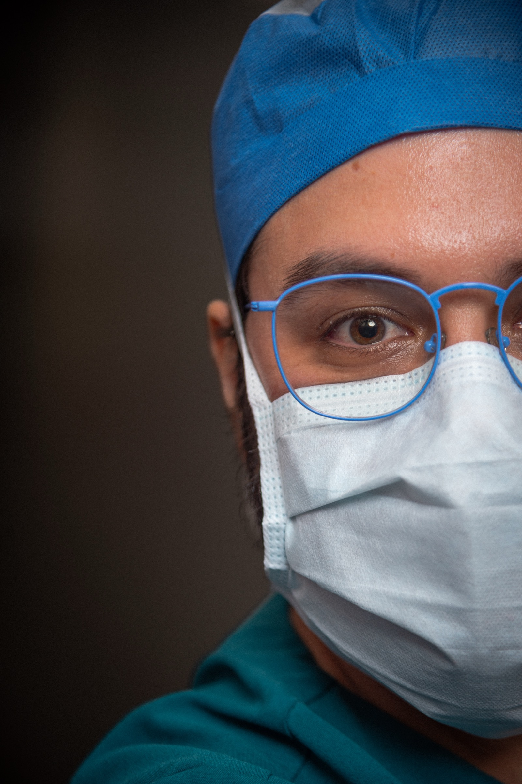
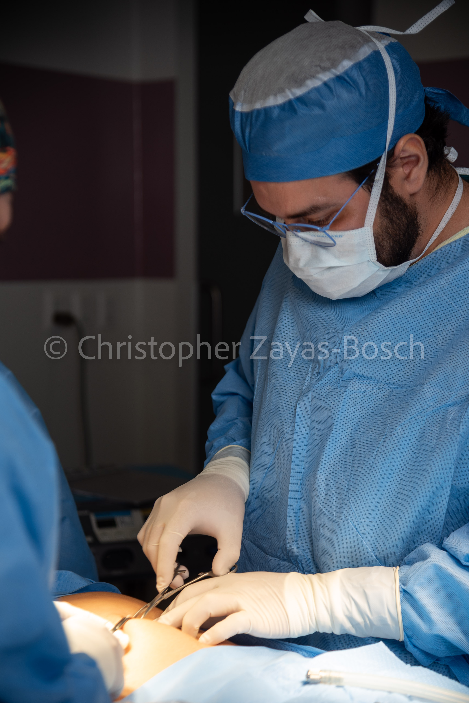
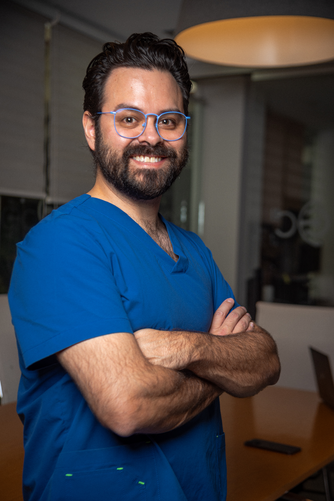

Más de 2,000 cirugías exitosas · Certificado CMCG
Funduplicatura laparoscópica en el Centro Quirúrgico Servicura, CDMX. Atención directa con el Dr. Edgar Núñez García.

¿Te identificas?
El reflujo gastroesofágico ocurre cuando el esfínter esofágico inferior (la válvula entre el esófago y el estómago) no cierra correctamente. Esto permite que el ácido del estómago suba hacia el esófago, causando irritación y daño progresivo.
Los síntomas más comunes incluyen:
Muchos pacientes llevan años tomando omeprazol, pantoprazol u otros inhibidores de bomba de protones pensando que es la solución. Sin embargo, estos medicamentos solo reducen la producción de ácido temporalmente.
Los medicamentos controlan los síntomas, pero no corrigen el problema. Si tienes hernia hiatal o un esfínter esofágico deficiente, la cirugía es la única forma de resolver el reflujo de raíz.
Cada año que pasa con reflujo no tratado aumenta el riesgo de esofagitis, esófago de Barrett y otras complicaciones serias.
Procedimiento
Selecciono la técnica ideal según tu anatomía y los resultados de tus estudios para darte el mejor resultado posible.

Tu Proceso
Te acompaño en cada paso para que estés tranquilo y bien informado.
Consulta presencial donde evalúo tu caso. Solicito endoscopía y/o manometría esofágica para un diagnóstico preciso y determinar la mejor técnica quirúrgica.
Realizamos los estudios preoperatorios necesarios. Te doy indicaciones claras para el día de la cirugía y resuelvo todas tus dudas.
Funduplicatura laparoscópica de aproximadamente 60 minutos. Técnica de mínima invasión con alta el mismo día o al día siguiente.
Dieta líquida la primera a segunda semana, dieta blanda por 2 a 4 semanas y reintroducción gradual de alimentos sólidos. Seguimiento incluido hasta tu alta completa.
Todo Incluido
Precio transparente, sin sorpresas ni costos ocultos.
Atención directa del Dr. Edgar Núñez García durante todo el procedimiento.
Anestesia general administrada por un especialista certificado.
Estancia en el Centro Quirúrgico Servicura con instalaciones de primer nivel.
Todo el material necesario para la cirugía incluido en el paquete.
Consultas de seguimiento sin costo adicional hasta tu recuperación completa.
Hospital equipado para manejar cualquier eventualidad con los más altos estándares.
Tu Cirujano

Soy cirujano general con especialidad en cirugía gastrointestinal y de mínima invasión. Mi prioridad es que entiendas tu diagnóstico, conozcas tus opciones y tomes una decisión informada.
Me formé en la Universidad La Salle como médico cirujano y realicé mi especialidad en Cirugía General en el Centro Médico ABC con aval de la UNAM. Posteriormente me entrené en cirugía laparoscópica y de mínima invasión en la misma institución.
Testimonios
Opiniones de pacientes que resolvieron su reflujo con cirugía.
"Llevaba 8 años tomando omeprazol diario. Después de la funduplicatura con el Dr. Núñez, ya no necesito ningún medicamento."
Paciente verificada · Reflujo
"Tenía miedo de la cirugía, pero el doctor me explicó todo paso a paso. La recuperación fue más rápida de lo que pensé."
Paciente verificado · Funduplicatura
"Excelente cirujano. Profesional, puntual y muy humano. Mi reflujo desapareció por completo."
Paciente verificada · Reflujo Gastroesofágico
Sin Riesgos
Tu primera consulta es para resolver dudas. No hay presión ni obligación de operarte.
El precio que te doy incluye todo. Sin costos sorpresa ni cargos adicionales el día de la cirugía.
Las consultas de seguimiento están incluidas en tu paquete. No pagas extra por tu recuperación.
Yo soy tu cirujano desde la primera consulta hasta el alta. Tienes mi contacto directo para cualquier duda.
Preguntas Frecuentes
El reflujo ocurre cuando el esfínter esofágico inferior (la válvula entre el esófago y el estómago) no cierra correctamente. Las causas más comunes son hernia hiatal, debilidad del esfínter, obesidad, embarazo y ciertos hábitos alimenticios. El tabaquismo y algunos medicamentos también pueden contribuir a debilitar esta válvula.
Los medicamentos como omeprazol y pantoprazol controlan los síntomas al reducir la producción de ácido, pero no corrigen el problema anatómico. Si la causa es una hernia hiatal o un esfínter esofágico deficiente, la funduplicatura es la única forma de resolverlo de raíz y dejar de depender de medicamentos de por vida.
La funduplicatura es un procedimiento quirúrgico donde se envuelve la parte superior del estómago (fondo gástrico) alrededor del esófago inferior para recrear la válvula antirreflujo natural. Se realiza por laparoscopía con 3-4 incisiones pequeñas, lo que permite una recuperación mucho más rápida que la cirugía abierta.
La funduplicatura laparoscópica dura aproximadamente 60 minutos. Se realiza bajo anestesia general y en la mayoría de los casos el paciente puede irse a casa el mismo día o al día siguiente de la cirugía.
Sí. Después de la cirugía se sigue una dieta progresiva: líquidos claros la primera semana, dieta blanda de la segunda a la cuarta semana, y después se reintroducen los alimentos sólidos gradualmente. La gran mayoría de los pacientes come con total normalidad entre las 4 y 6 semanas posteriores a la cirugía.
La mayoría de los pacientes regresan a sus actividades cotidianas entre 5 y 7 días después de la cirugía. Se recomienda seguir una dieta especial durante 2 a 4 semanas y evitar esfuerzos físicos intensos por 3 a 4 semanas. Te doy indicaciones detalladas y seguimiento personalizado durante toda tu recuperación.
El reflujo no tratado causa daño esofágico progresivo. Con el tiempo puede provocar esofagitis (inflamación crónica del esófago), úlceras esofágicas, estenosis (estrechamiento del esófago que dificulta tragar) y esófago de Barrett, una condición premaligna que aumenta el riesgo de cáncer esofágico.
El paquete todo incluido tiene un precio desde $45,000 MXN. Incluye honorarios del cirujano, anestesiólogo, hospitalización, insumos quirúrgicos y seguimiento postoperatorio. Ofrecemos financiamiento a 3, 6, 9 y 12 meses para que el costo no sea un obstáculo para tu salud.
Agenda tu valoración y descubre si la funduplicatura es la solución definitiva para ti. Sin compromiso, con total transparencia.
Centro Quirúrgico Servicura
Av. Cuauhtémoc, Eje 1 Pte 52
Col. Doctores, 06720 CDMX
Hospital Punta Médica Alta Especialidad
Consultorio 710 - 711
Av. de la Herradura Manzana 030
Country Club, 53930 Naucalpan de Juárez, Méx.
Lunes a Viernes: 9am-11am y 4pm-8pm
Sábado: 9am-2pm